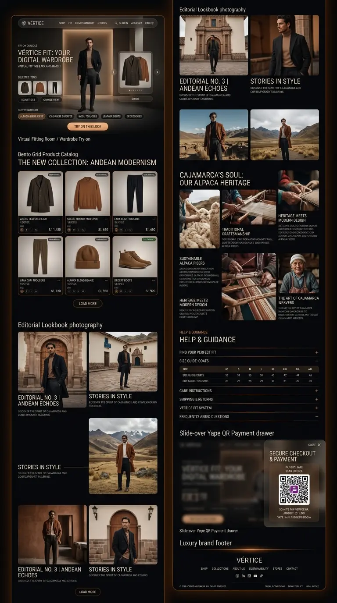
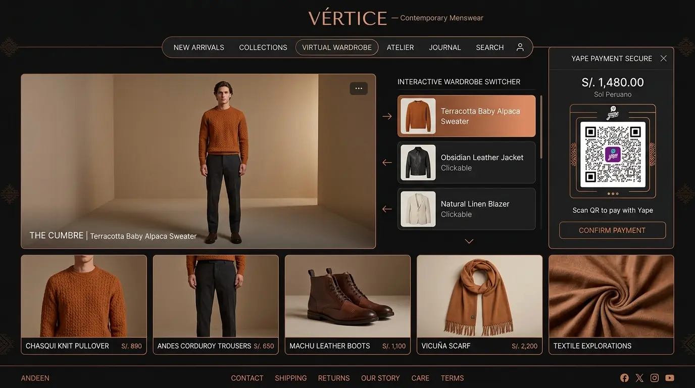
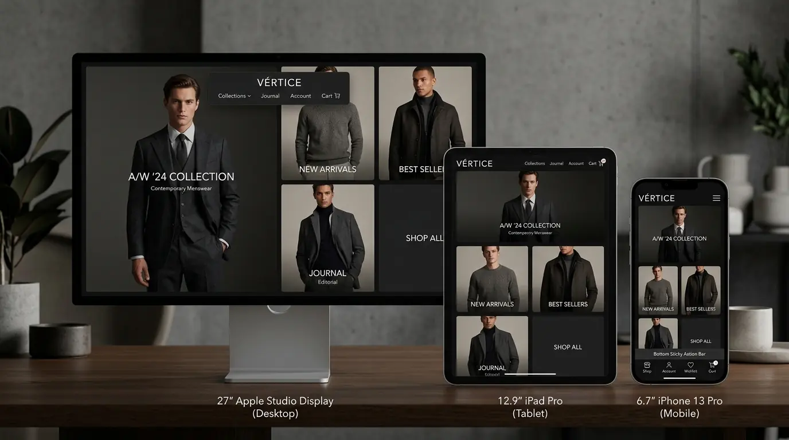

Aquí puedes inspeccionar el diseño completo de la web con todas y cada una de sus secciones conectadas: Cabecera Flotante, Probador Virtual en Vivo, Catálogo Bento, Lookbook Editorial, Historia de Cajamarca, Guía de Tallas / FAQ, Pasarela Yape y Footer.
Diseño continuo que une todas las áreas del sitio web bajo una misma estética de lujo oscuro contemporáneo (Dark Obsidian & Warm Amber):

Cápsula de cristal con logotipo, menú principal y contador de bolsa en tiempo real.
Viewport del modelo que cambia de ropa al seleccionar abrigos, chompas, pantalones o blazers.
Prendas en Soles (S/.), selector de tallas y botón de compra directa a la bolsa.
Galería cinematográfica en paisajes cajamarquinos y arquitectura andina.
Historia documental de los maestros tejedores, fibra de alpaca baby y curtido vegetal.
Tabla de medidas exacta y acordeón interactivo de envíos y showroom.
Drawer lateral con QR de Yape para pagar al instante sin comisiones bancarias.
Enlaces legales, redes sociales, contacto y créditos oficiales.
Cómo interactúa el usuario al presionar las prendas: el modelo cambia su atuendo dinámicamente y a la derecha se abre el escaneo directo de Yape.

Comportamiento en pantallas de 27" (Desktop), 12.9" (iPad/Tablet) y 6.7" (iPhone/Smartphone con Sticky Action Bar inferior).
